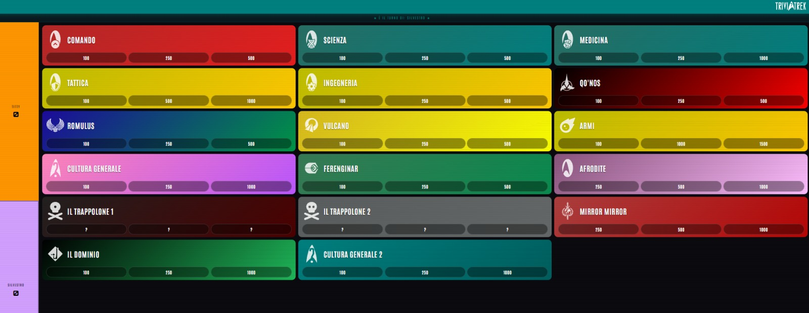
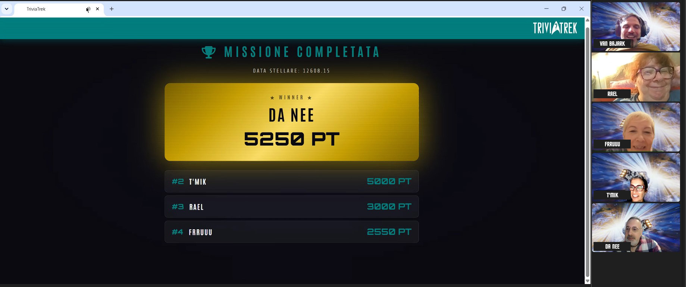
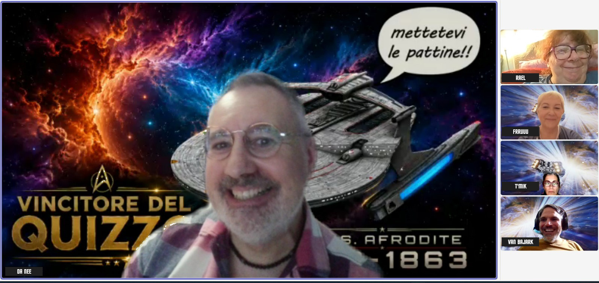

Inizio registrazione (in diretta da oltreoceano).
La riunione inizia alle 16.00 ora locale, le 21.00 ora dello stivale. Attivo la stanza online e sono in grado di condividere
il link con gli altri.
Il primo a collegarsi è il Guardiamarina Da Nee, seguito dal Guardiamarina Rael... che però non parla. NON PARLA!
Credendo che ci fossero delle interferenze proviamo a scuoterla, e lei ci dice che non aveva niente da dire.
Si parla del più e del meno e ci si interroga sul perché qui in Canada, il 'ferragosto' non esista.
La dottoressa T'Mik ci raggiunge, e poco dopo arriva anche il primmo ufficiale Frruuu. Purtroppo il Guardiamarina Renzi è
rimasta colpita dalla febbre e non potrà partecipare.
Si parla dei barattoli di marmellata e di come in Nord America siano diversi da quelli europei e del fatto che vendano
la paraffina da mettere sopra la marmellata. Grande shock per tutti. Poi si richiede un vasetto di aria fresca canadese
inviato via posta a tutti i membri dell'equipaggio per mitigsre il torrido clima italico.
Frruuu ci racconta della sua vacanza a Limone Piemonte e del fatto che l'invenzione della e-bike sia stata fondamentale
per scalare le montagne, mentre la bicicletta normale avrebbe provocato sicuramente qualche infarto. Dall'altra parte,
in Canada, l'affitto delle e-bike è a circa 50 CAD/h, con grandissimo stupore della ciurma.
Danee apre la finestra.
Si inzia il quiz perché le categorie sono tantissime. Spiego come funziona la nuova dinamica dei 'trappoloni' e vengo
immediatamente riempito di improperi.

Vengo dipinto con un gatto bianco in braccio mentre mi sfrego le mani e ridacchio con una voce malefica.
(computer, aggiungere voce malefica di sottofondo)
Il seguente è l'ordine di turno dei giocatori:
Frruuu – Da Nee – T'Mik – Rael
Vengono ora di seguito riportati in una tabella i risultati alla fine di ogni manche di gioco.
| TURNO | FRRUUU | DANEE | T'MIK | RAEL |
|---|---|---|---|---|
| 1 | 300 | 550 | 0 | 300 |
| 2 | 300 | 800 | 250 | 550 |
| 3 | 1350 | 1850 | 1300 | 550 |
| 4 | 1950 | 2350 | 1800 | 650 |
| 5 | 1950 | 3400 | 2850 | 1700 |
| 6 | 2950 | 3900 | 3350 | 2200 |
| 7 | 1950* | 4200 | 3350 | 2500 |
| 8 | 2500 | 4450 | 3600 | 2750 |
| 9 | 2500 | 4750 | 3900 | 2900 |
| 10 | 2500 | 5050 | 4050 | 3050 |
| 11 ** | 2600 | 5150 | 4150 | 3150 |
| 12 | 2700 | 5250 | 4250 | 3250 |
| 13 | 2550 | 5250 | 5000 | 3000 |
** i barattoli di Nutella si moltiplicano nel teletrasporto.

Alla fine del gioco Da Nee vince con 5250 punti e ottiene l'ambitissimo sfondo per Microsoft Teams che dovrà sfoggiare fino alla prossima reunion virtuale.

Prima di salutarci si parla un po' delle nuove puntate di Star Trek Strange New Worlds e delle vacanze.
Come si dice a Roma... si è fatta 'na certa in Italia e tutti vanno a dormire.
Fine registrazione.
GM Robert Van Bajark
XMO
USS Afrodite NCC-1863